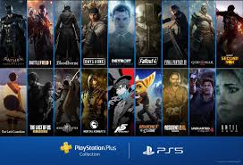
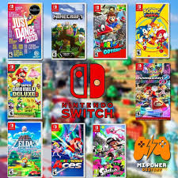

Epic Games
Steam
PlayStation
Xbox
Nintendo

Epic Games |
Steam |
PlayStation |
Xbox |
Nintendo |
|
|
 |  |
Epic Games, PlayStation y Xbox no cuntan como tal con un apartado
para las guias de sus juegos pero la siguiente paguina te puede ayuadar
con barias guias para dichas plataformas
A diferencia de las otras plataformas Steam si cuenta con su propio apartado para las guias de sus juegos
esta seccion se le conose como comundad si te interesa ir directamente al aparado de guias de steam da clik en el siguinet boton
Nintendo tambien cuenta con su propio apartado para sus guias de sus grandes franquisias
para acceder a sus guias de mamera mas rapida da clik en el siguiente boton